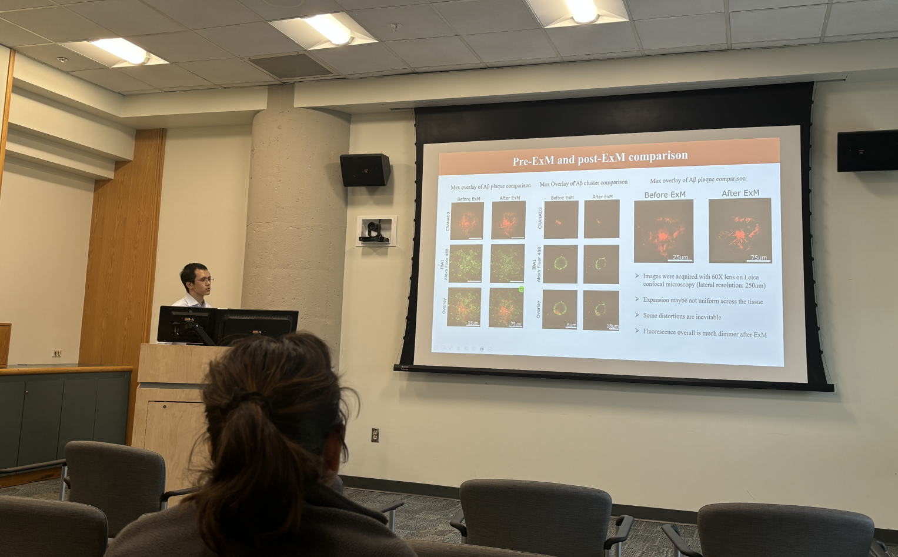
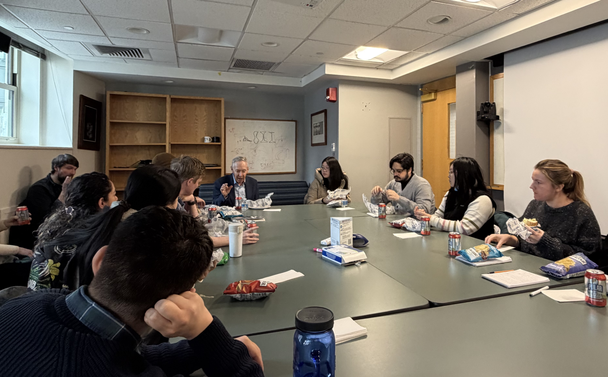
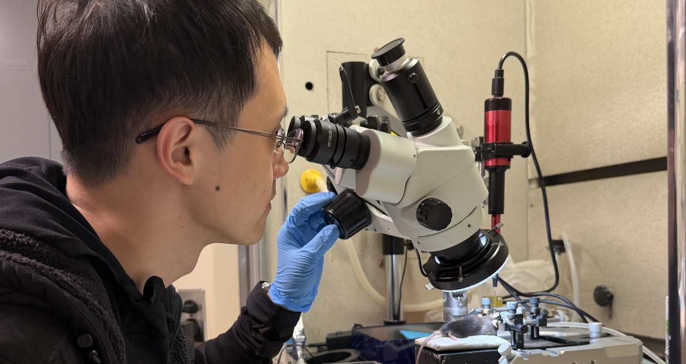
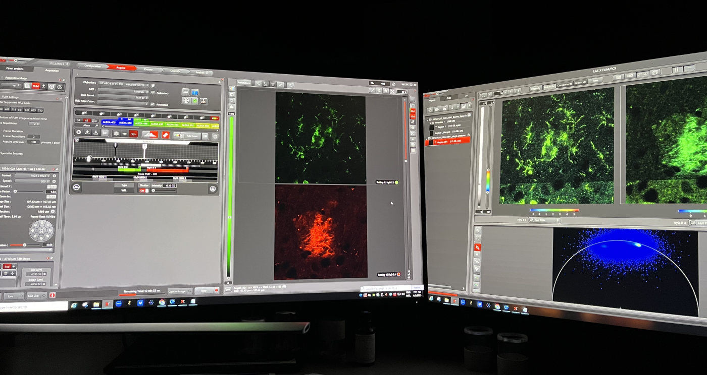
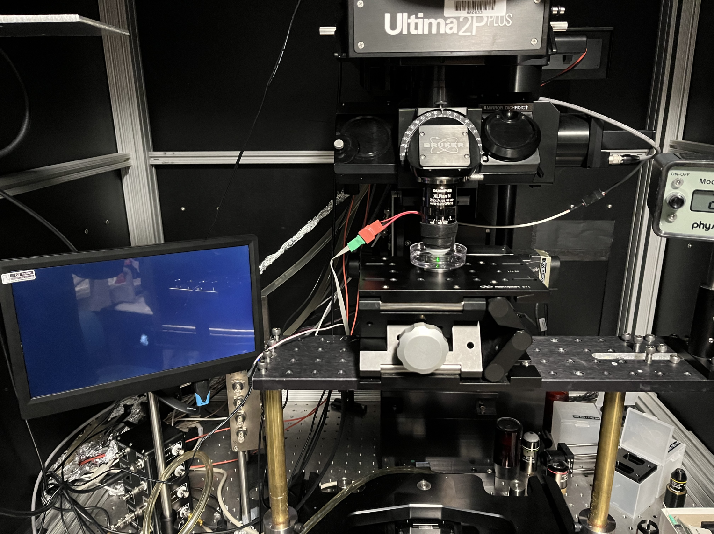
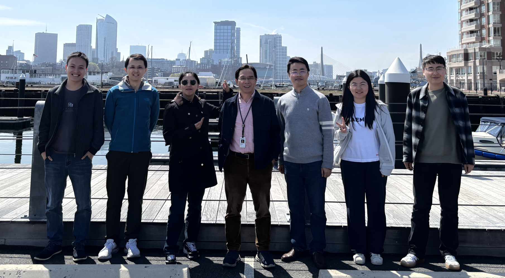
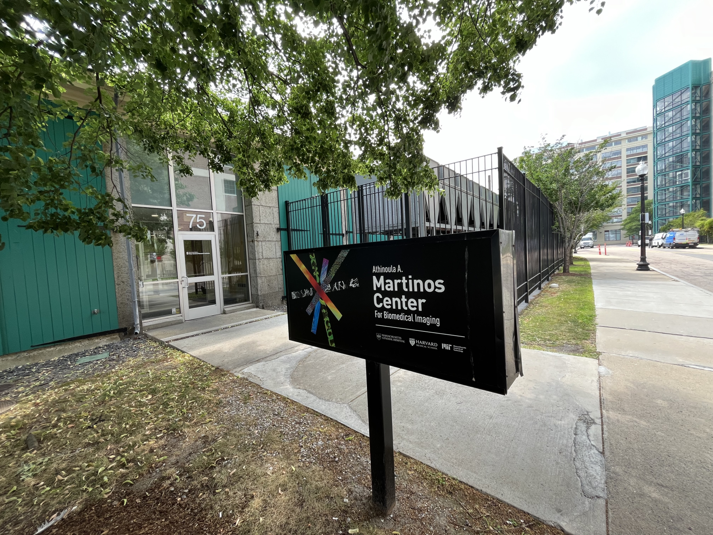

Presenting reasearch at Prof. Peter Caravan's group meeting at Martinos Center

Discussing with Prof. Dennis Selkoe after an Alzheimer's disease seminar at HMS

Injecting AAV vectors and fluorescent probes in mouse disease models

Imaging Aβ plaques and microglia using confocal and fluorescence lifetime microscopy.

Calibrating two-photon fluorescence microscopy for in vivo mouse brain imaging.

Group photo with my PI, Prof. Chongzhao Ran (at center), and lab members at Martinos Center.

Finishing my postdoc at MGH/HMS before relocating to Seattle in April 2026.
01 07